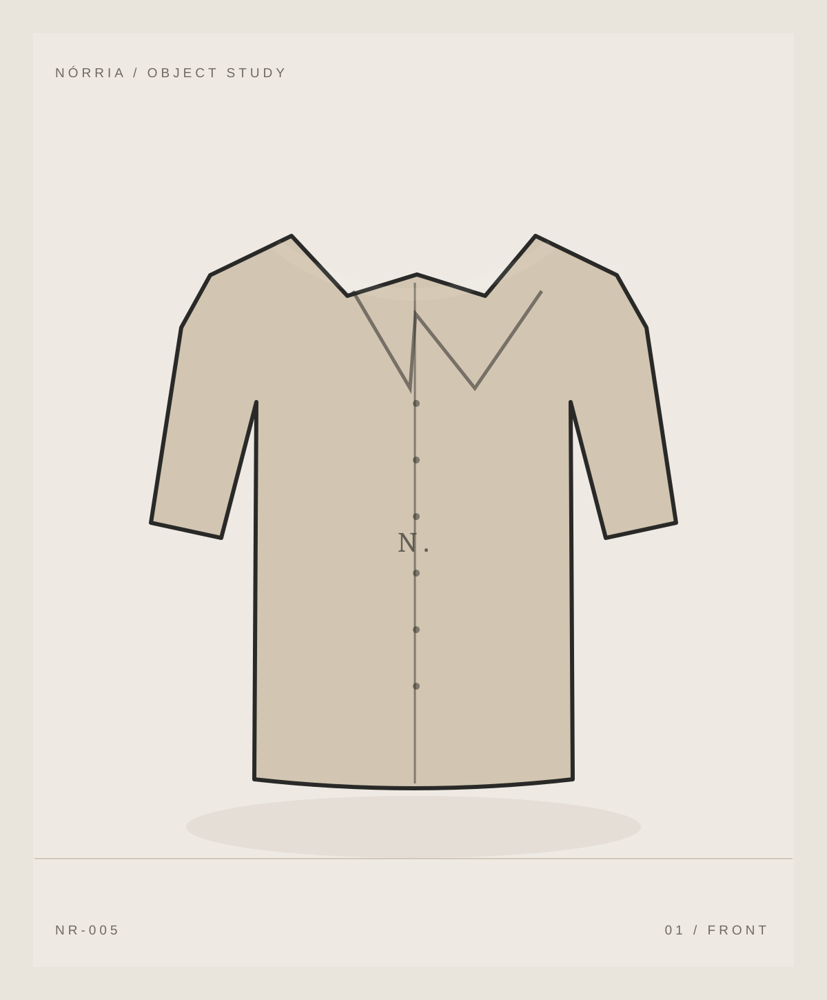
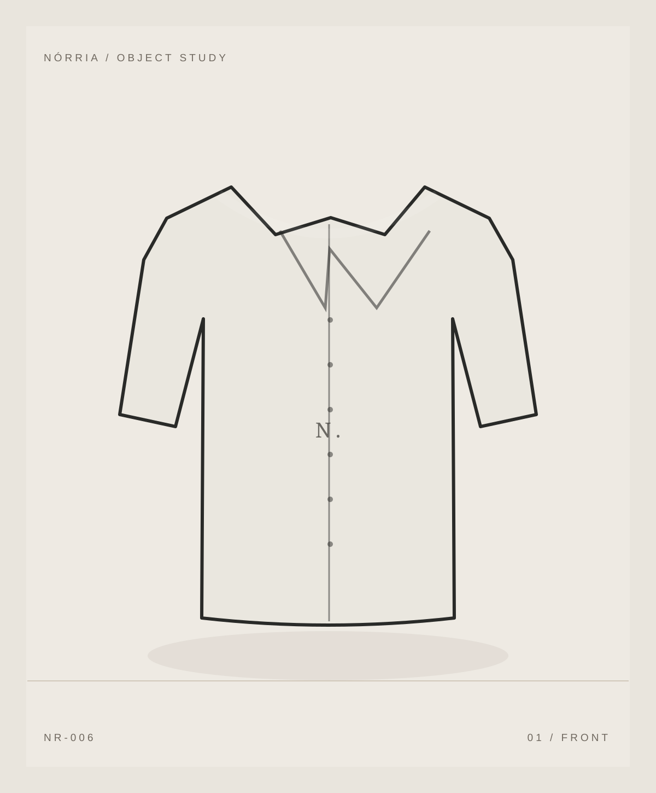

Camisa Vento
R$ 469,00

Ilustrações vetoriais conceituais; não representam produtos fabricados ou fotografados.

Preço fictício: R$ 489,00
Uma peça de estudo que explora proporção, textura e uso cotidiano. As especificações, materiais e valores são ilustrativos.
P / M / G / GG são categorias demonstrativas. Nenhuma peça foi produzida ou medida.
Linho misto. Uma peça de estudo que explora proporção, textura e uso cotidiano. As especificações, materiais e valores são ilustrativos.
Produto conceitual sem estoque; não disponível para compra real.
Simulação de interface, sem prazos, frete ou política comercial aplicáveis.
P / M / G / GG são categorias demonstrativas. Nenhuma peça foi produzida ou medida.